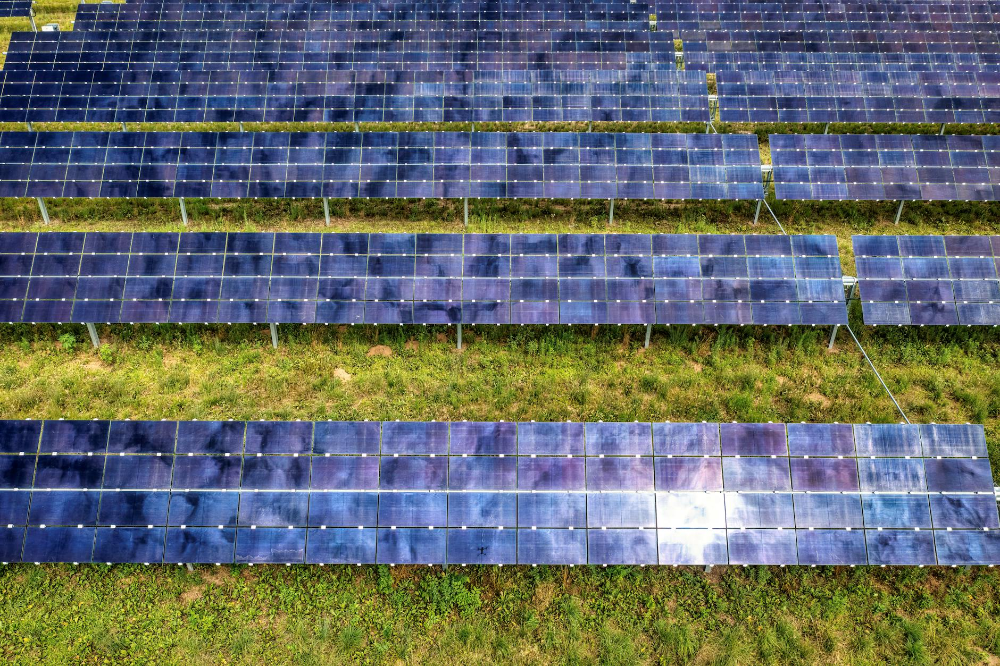

Utility and rooftop solar PV thermography (#solar). A five-stage procedure (#procedure), a fixed severity-ranked output format, fixed turnarounds.

Thermographic survey of crystalline-silicon arrays. Two-pass capture: nadir thermal at 30–40 m AGL for anomaly mapping, oblique RGB for context and module-ID confirmation. Anomalies classified by ΔT against ambient and string-baseline, severity-ranked S1–S4, returned as GeoJSON tied to module geometry.
Standard reference: IEC TS 62446-3 for thermography, IEC 61724-1 for environmental conditions during the flight window.
Compliant with IEC TS 62446-3 (outdoor IR thermography of PV) and IEC 61724-1 (PV performance monitoring). EU 2019/947 Open Category A1/A3. GDPR-compliant data handling — site imagery stored encrypted, deleted on client request.
| Plant size | On-site | Report delivery |
|---|---|---|
| Up to 1 MW | 2–3 h | 3 working days |
| 1–5 MW | 4–8 h | 4 working days |
| 5–20 MW | 1-2 days | 5 working days |
| 20 MW+ | 2–4 days | 7–10 working days |
One aircraft on day one. The upgrade unit isn't on a shelf — it's named so you can see how the operation scales without surprise.
A single site, scoped end-to-end, delivered with the full data package. You evaluate the deliverables against your O&M workflow before any framework agreement is discussed.